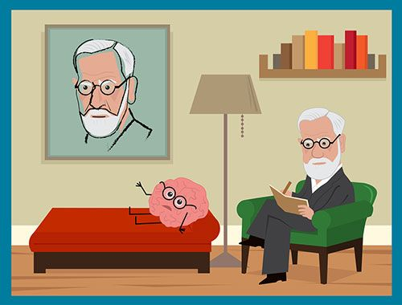
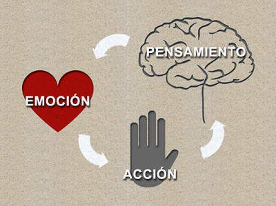
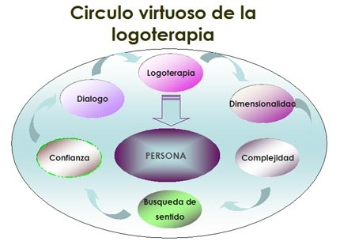
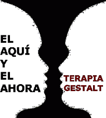

Tipos de Terapia
Es un método de investigación del inconsciente del sujeto por
medio de la asociación libre,interpreta los sueños y los actos
fallidos y es un tratamiento terapéutico y un conjunto de teorías
psicológicas y psicopatológicas derivadas de los resultados de los
2 métodos antes identificados. Hay tres tipos de Tratamientos
Psicoanalíticos: Asociación libre En la asociación libre, él
paciente debe manifestar todas sus ideas, pensamientos, imágenes y
todo lo que piensa al psicoanalista. El paciente en esta fase
muestra una represión que le dificulta aceptar sus propias
vivencias. El psicoanalista debe interpretar las emociones y el
funcionamiento psíquico del paciente. El segundo tratamiento es:
La interpretación de los sueños, Los sueños son realizaciones
simbólicas de deseo. Los anhelos y deseos son prohibidos en el
estado consciente y tienen una oportunidad de exteriorizarse tras
la desfiguración onírica, esto es, el proceso llamado por Sigmund
Freud para descubrir las ideas del soñador a través de los
siguientes mecanismos; condensación, desplazamiento, dramatización
y simbolización. Y por último los Actos Fallidos, los actos
fallidos es la muestra de procesos inconscientes o intenciones
reprimidas.

Su autor es Aaron Beck, es un tipo de psicoterapia con la que se
ayuda a los pacientes a cambiar su conducta mediante el cambio de
la forma en que piensan y sienten sobre ciertas cosas. Se usa para
tratar trastornos mentales, emocionales, de personalidad y de
conducta. También se llama TCC y terapia cognitiva. Es un
tratamiento psicológico a corto plazo que ayuda a modificar los
pensamientos, sentimientos y comportamientos negativos. Por lo
general se trata de terapias breves, focalizadas en los problemas
puntuales que el paciente trae a la consulta. Si bien se toma
en cuenta el pasado, como parte de su historia, el foco del
tratamiento se ubica en el presente. El terapeuta, que debe estar
altamente entrenado en técnicas para el estrés y la ansiedad,
cumple un rol muy activo, a diferencia de lo que ocurre en las
terapias tradicionales. Se entrenará al paciente en: a)
identificación, confrontación y modificación de pensamientos; b)
identificación de emociones y su influencia sobre las
interpretaciones que cada uno hace de eventos, conflictos o
sensaciones corporales; y c) la organización del tiempo.

Se conoce como logoterapia a una variante de la psicoterapia que
gira en torno a la presentación del concepto de voluntad de
sentido como primera motivación del hombre. Este tipo de
psicoterapia que promovió el neurólogo y psiquiatra Viktor Frankl
haya su base en el análisis existencial. Frankl, quien durante
algún tiempo estuvo cautivo en un campo de concentración, explicó
con el paso de los años que consiguió sobrevivir gracias a que
pudo dar un logos (sentido o significado) a su existencia. Entre
los principales postulados de la logoterapia, además de la ya
mencionada voluntad de sentido (la cual permite demostrar que el
animatismo del hombre lo distingue frente a cualquier especie del
reino animal o vegetal), se encuentran la libertad de voluntad
(que asegura que todo sujeto está capacitado para tomar decisiones
personales y goza de la libertad necesaria para elegir su propio
destino) y el sentido de vida (en este contexto, la logoterapia
constituye una percepción del mundo de raíz positiva). Los métodos
de Frankl aplicados a la logoterapia giran en torno al diálogo
para descubrir qué es lo que da sentido a la vida de una persona,
pero también aborda las dolencias de carácter psíquico desde un
punto de vista médico (por citar un caso concreto a modo de
ejemplo, al recetar un tratamiento hormonal a quien sufre
depresión).

La Terapia Gestalt es una terapia psicológica humanista que busca
desarrollar el potencial humano y el crecimiento personal. Se
trata de una forma de psicoterapia utilizada para tratar diversos
trastornos psicológicos y emocionales, la cual nos acerca a
conceptos como la toma de conciencia, la autorrealización, el
desarrollo personal y la autoestima. Esta terapia procura integrar
las conductas, sentimientos y pensamientos del paciente, de manera
que sus intenciones y acciones estén enfocadas en conseguir una
salud mental óptima. El psicólogo ayudará al paciente a que sea
más consciente de sí mismo, a pensar más en el presente y a asumir
más responsabilidades en el cuidado de su vida. Las técnicas de la
terapia gestáltica incluyen: La confrontación, El análisis de los
sueños, El juego de roles. La Terapia Gestalt está enfocada
principalmente en lo que se está pensando y sintiendo ahora, no en
lo que pudo ser o cómo debería haber sido. Consiste en hacer que
el paciente viva y sienta la realidad, dando un mayor protagonismo
a "cómo", "porqué" y "para qué".

Mindfulness es la capacidad humana básica de poder estar en el
presente y de "recordarnos" estar en el presente, es decir,
constantemente estar volviendo al aquí y ahora. No podríamos vivir
sin la capacidad de estar en el presente: es la que nos permite
recordar a dónde estamos yendo mientras caminamos, aun cuando
durante el trayecto nos hayamos perdido en miles de pensamientos.
Sin Mindfulness sería imposible poder observar y reconocer la
propia experiencia y vivir en este mundo. Sin embargo, y aunque
creemos tener control consciente de nuestra atención, lo que
normalmente sucede es que estamos constantemente atendiendo a
pensamientos acerca del pasado o del futuro o bien, reconociendo
solo una pequeña porción de lo que está sucediendo en el presente:
si lo que estoy experimentando me gusta, quiero que continúe o si
lo que estoy experimentando me desagrada, quiero que desaparezca.
Mindfulness permite reconocer lo que está sucediendo mientras está
sucediendo, aceptando activamente el fluir de la experiencia tal
cual se está dando. Así es que, aunque experimentemos algo
desagradable (por cierto algo inevitable en la medida en que
estemos vivos), podremos ahorrarnos el sufrimiento añadido de
tener que lograr que aquello desagradable desaparezca. Quedarse
solo con lo que experimentamos sin agregar nada más es lo que la
práctica de mindfulness permite.